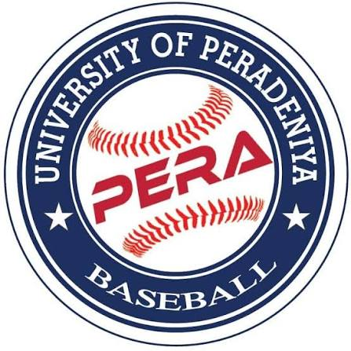
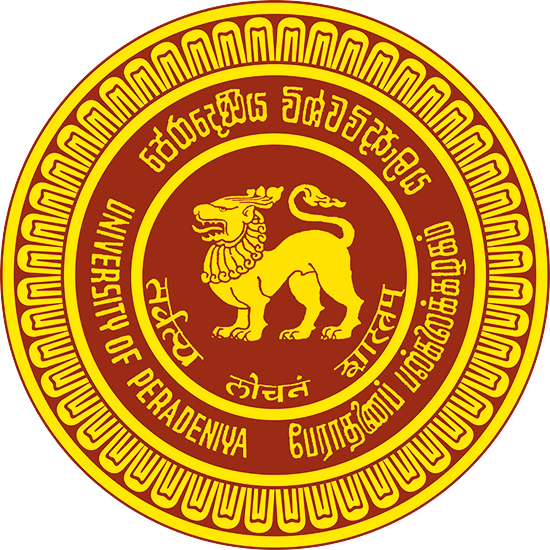
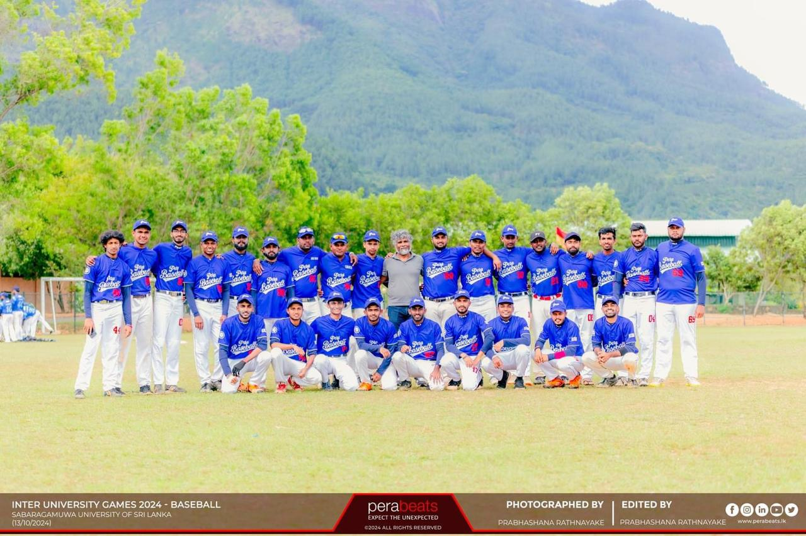

CHAMPIONS
Greenfield Classic
Baseball Tournament
Organized by Sabaragamuwa University of Sri Lanka.
TOURNAMENT TITLE

PERADENIYABASEBALLSPONSORSHIP PROPOSAL · 2026
01 / WHO WE ARE
As the baseball team of the University of Peradeniya, we represent our university at inter-university and national competitions with commitment and skill.
Across successive seasons, our team has achieved important victories, brought pride to our university and strengthened its recognition in baseball. Our record reflects the dedication of our players and our continued efforts to compete and improve.
02 / OUR RECORD
Championship moments.
Experience to build on.
CHAMPIONS
Organized by Sabaragamuwa University of Sri Lanka.
TOURNAMENT TITLE3RD RUNNER-UP
A semi-final appearance, finishing as third runner-up in baseball.
UNIVERSITY COMPETITIONTOP 6 CLUBS
Ranked among the top six baseball clubs in Sri Lanka.
NATIONAL COMPETITIONRUNNER-UP
Runner-up in the inter-university baseball competition.
UNIVERSITY COMPETITION| Year | Competition | Achievement / participation |
|---|---|---|
| 2026 | Greenfield Classic Baseball Tournament Organized by Sabaragamuwa University of Sri Lanka · June | Champions |
| 2026 | National Baseball Super League | Participated |
| 2025 | Sri Lanka University Games — Baseball | Third runner-up (semi-finalists) |
| 2024 | Central Baseball League — Central Province | Participated |
| 2024 | National Baseball Knockout Championship | Quarter-finalists |
| 2024 | National Baseball Super League | Ranked among Sri Lanka’s top six baseball clubs |
| 2024 | Inter University Women’s Baseball Tournament | Organized the first-ever tournament; secured runner-up |
| 2024 | Inter University Games — Baseball | Quarter-finalists |
| 2024 | National Women’s Baseball Knockout Championship | Participated |
| 2023 | Sri Lanka University Games — Baseball | Quarter-finalists |
| 2022 | Japan–Sri Lanka Friendship Baseball Tournament National level | Ranked among Sri Lanka’s top five baseball clubs |
| 2022 | Inter University Games — Baseball | Runner-up |

03 / OUR GAME
We create opportunities to compete, prepare and connect with the wider baseball community.
Building match experience through games with university and local teams.
In 2024, we organized the first-ever Inter University Women’s Baseball Tournament and secured runner-up. We also participated in the National Women’s Baseball Knockout Championship.
Our competition experience includes the National Baseball Super League, the National Baseball Knockout Championship and the Japan–Sri Lanka Friendship Baseball Tournament. We participated in the National Baseball Super League again in 2026.
We represent Peradeniya at the Inter University Games and the Sri Lanka University Games, building on our results across successive seasons.
04 / PARTNER WITH PERADENIYA
Three proposed levels of support.
Choose the partnership that fits your company.
LKR 200,000
Team-kit branding and visibility at our practice matches.
T-shirt logo position to be agreed.
LKR 100,000
A place on the kit we wear as a team.
LKR 50,000
Support the team with sleeve branding.
Proposed sponsorship contributions in Sri Lankan rupees. Duration, logo dimensions and positioning, banner arrangements, and applicable university approvals will be agreed before confirmation. No exclusive sponsorship rights are implied.
THE NEXT CHAPTER
We invite your company to support University of Peradeniya Baseball and become part of our journey.
Email address to be added.